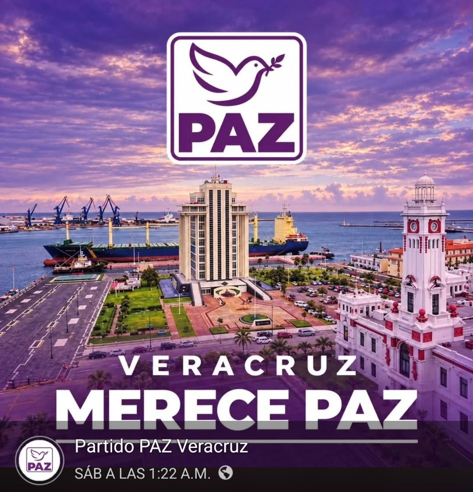
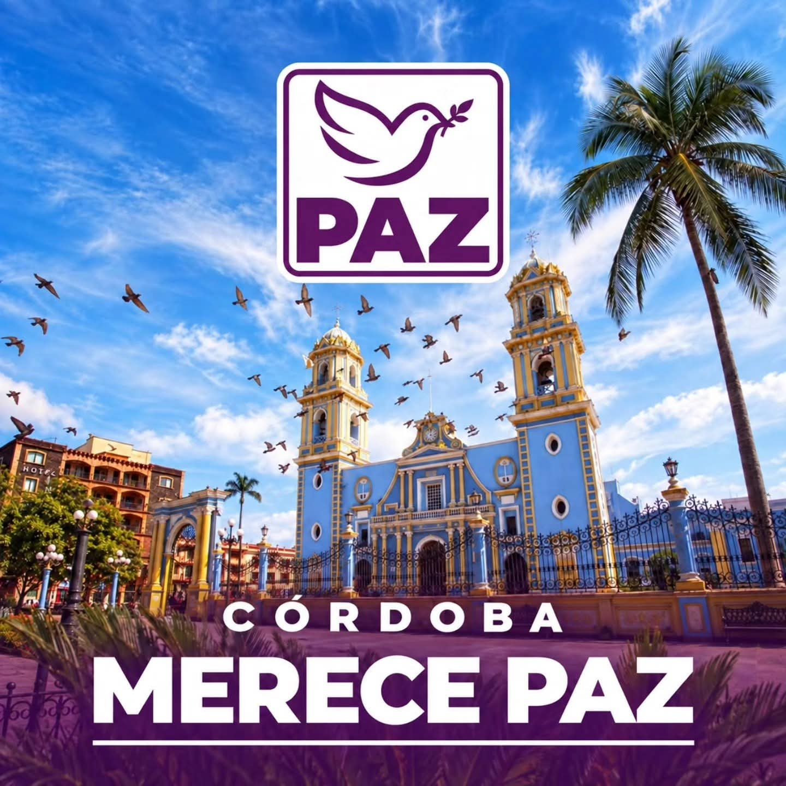
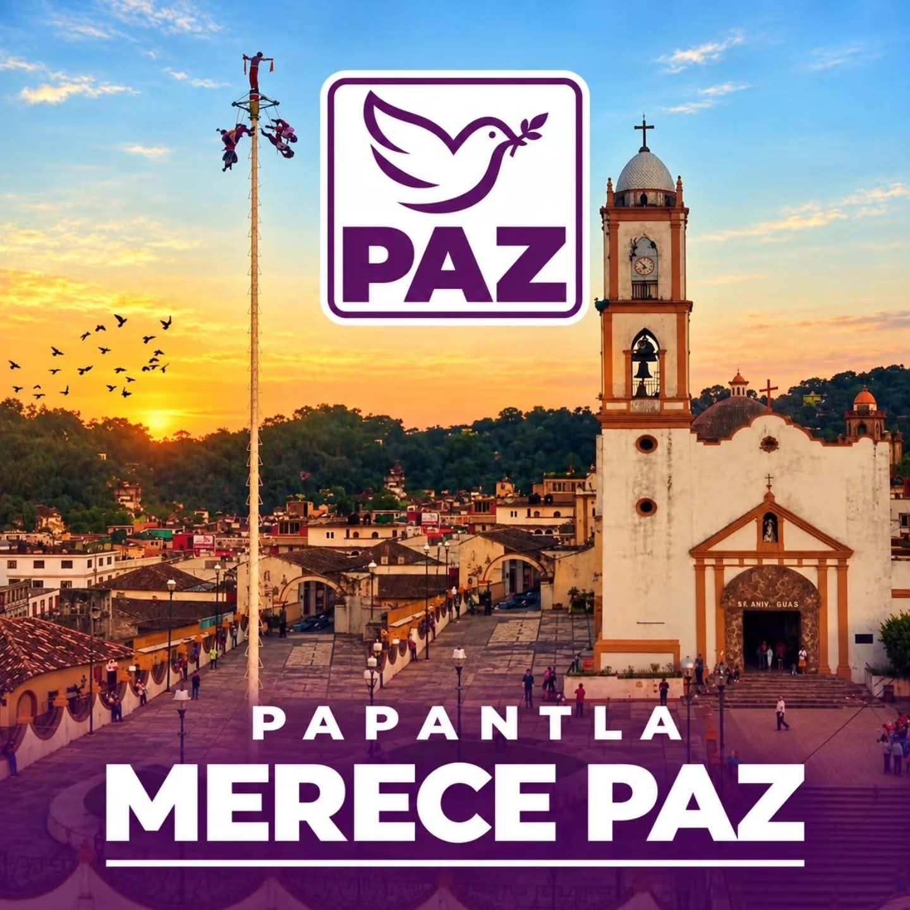

Zona centro-costera
Veracruz · México
VERACRUZ
MERECE
PAZ.
Un espacio institucional para informar, escuchar y acercar la participación ciudadana a las distintas regiones y municipios de Veracruz.
Identidad visual propia. Veracruz conserva el morado de PAZ, pero suma azul del Golfo, tonos arena y acentos coral para distinguirse de otras representaciones estatales.

Puerto de Veracruz

Córdoba

Papantla
Un estado diverso.
Una conversación que debe llegar a todos.
La propuesta visual se inspira en el territorio veracruzano: costa, ciudades, sierra, cultura y comunidades. La intención es que el portal se sienta estatal, cercano y reconocible.
212Municipios
1Identidad estatal
∞Voces por escuchar
Quiénes somos
Participación con raíces en Veracruz.
PAZ Veracruz se presenta como un espacio de organización y participación ciudadana orientado al diálogo, la comunidad y la construcción de soluciones desde el territorio.
01
Escuchar
Recibir propuestas, inquietudes y necesidades de las comunidades.
02
Conectar
Acercar municipios, regiones y personas mediante información clara y canales accesibles.
03
Construir
Transformar la participación en organización, seguimiento y acciones comunitarias.
Presencia en el estado
Veracruz se cuenta municipio en municipio.
Una sección visual para destacar actividades, enlaces y noticias regionales sin saturar la página principal.
Región de las Altas Montañas
Córdoba
Región Totonaca
Papantla
Actualidad
Noticias y comunicados.
Verdad, justicia y acompañamiento también forman parte de construir paz.
Espacio preparado para comunicar posicionamientos, actividades y mensajes institucionales de PAZ Veracruz con fecha, categoría e imagen destacada.
Contenido demostrativo · sustituir por publicación oficialTerritorio
Municipio en municipio.
Un módulo para organizar noticias y actividades por región o localidad.
Comunidad
#VeracruzMerecePaz
Integración de campañas, fotografías y mensajes de redes sociales.
Participa
Tu comunidad también cuenta.
La versión completa puede integrar formulario de contacto, registro de solicitudes, noticias, eventos, documentos y administración por usuarios autorizados.
Contactar en Facebook